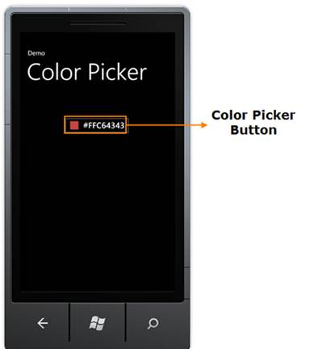
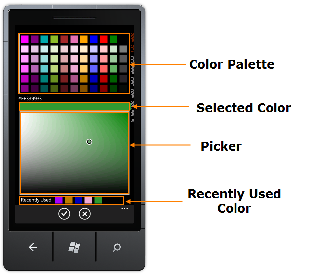

Figure 71: Color Picker Button
· Color Picker Button - Tap this button to display Color Picker.

Figure 72: Color Picker Control
· Color Palette –This consists of ten phone accent colors and five variations of each color.
· Selected Color – This displays the selected color.
· Picker – This displays various shades of the selected color. You can select the desired shade using a pointer.
· Recently Used Color – Five last selected colors will be listed for later use. When you select the sixth color first color will be removed from the list.